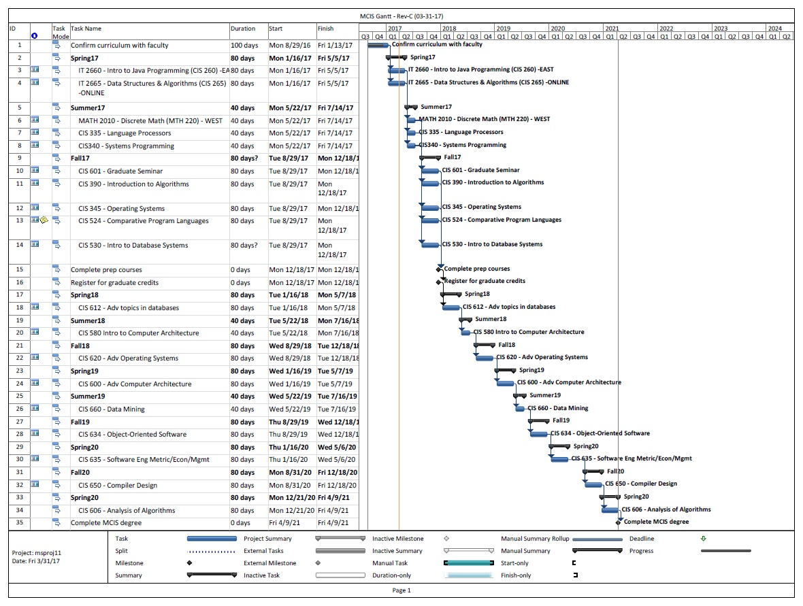

|
6. Management:
6.1. Relevant Software: 6.2. Projects: Dan has over 3 years of project management experience in machine procurement, technology assessment, and facility upgrades. These projects required skills in communication, leadership, influence, time management, agility, and organizational awareness. One of Dan's projects involved coordinating efforts of as many as 12 function groups including maintenance, scheduling, facilities, manufacturing, supply chain, quality, global sourcing, and data governance. Dan followed a project methodology of assessing, defining, developing, validating, launching, and closing. He used common PMP tools such as project charters, registers, re-occurring meetings, network diagrams, and work breakdown structures. One of Dan's favorite tools were Gantt charts. Gantt charts helped Dan keep track of progress, visualize critical path items, slack time, and identify areas of escalation. 6.2.1. Gantt Charts: Here is one of Dan's example Gantt charts:  Figure 6.1: Example Gantt showing the steps required to complete the MCIS degree. |